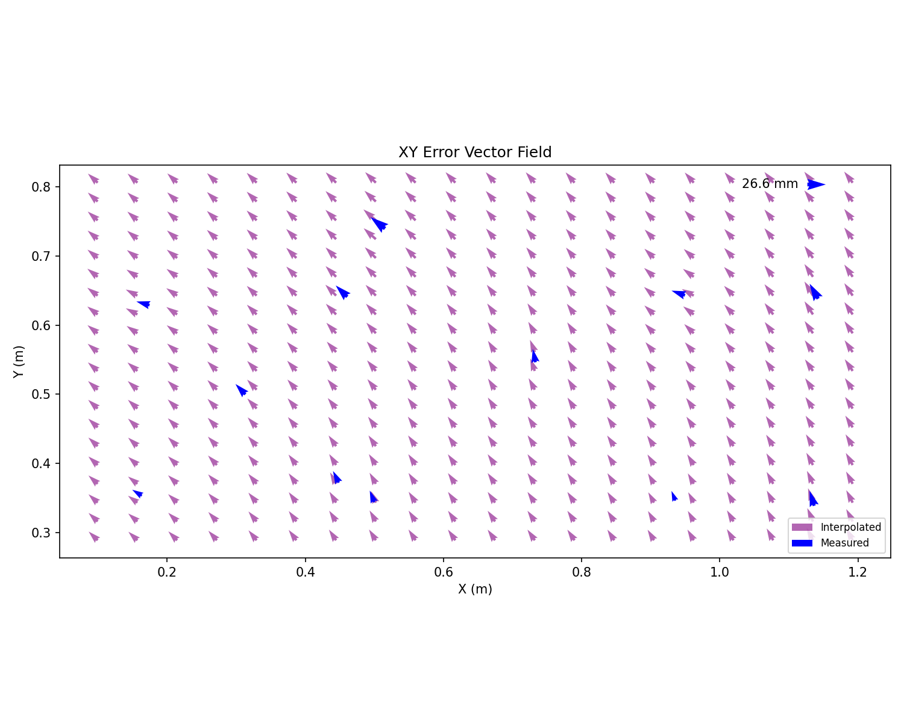
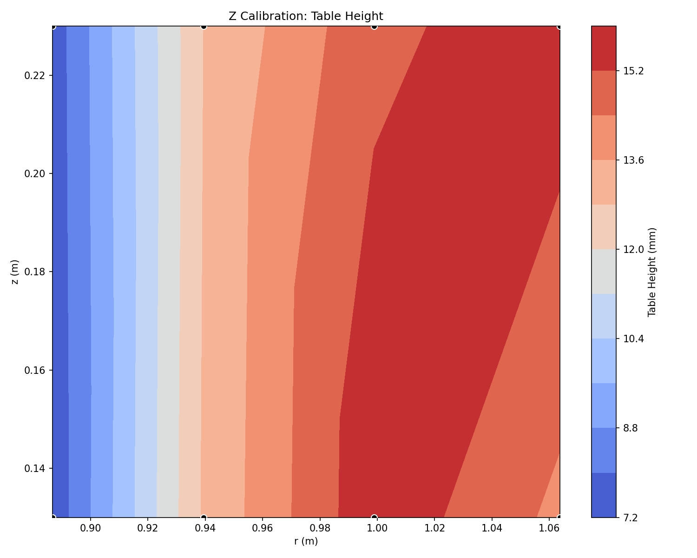
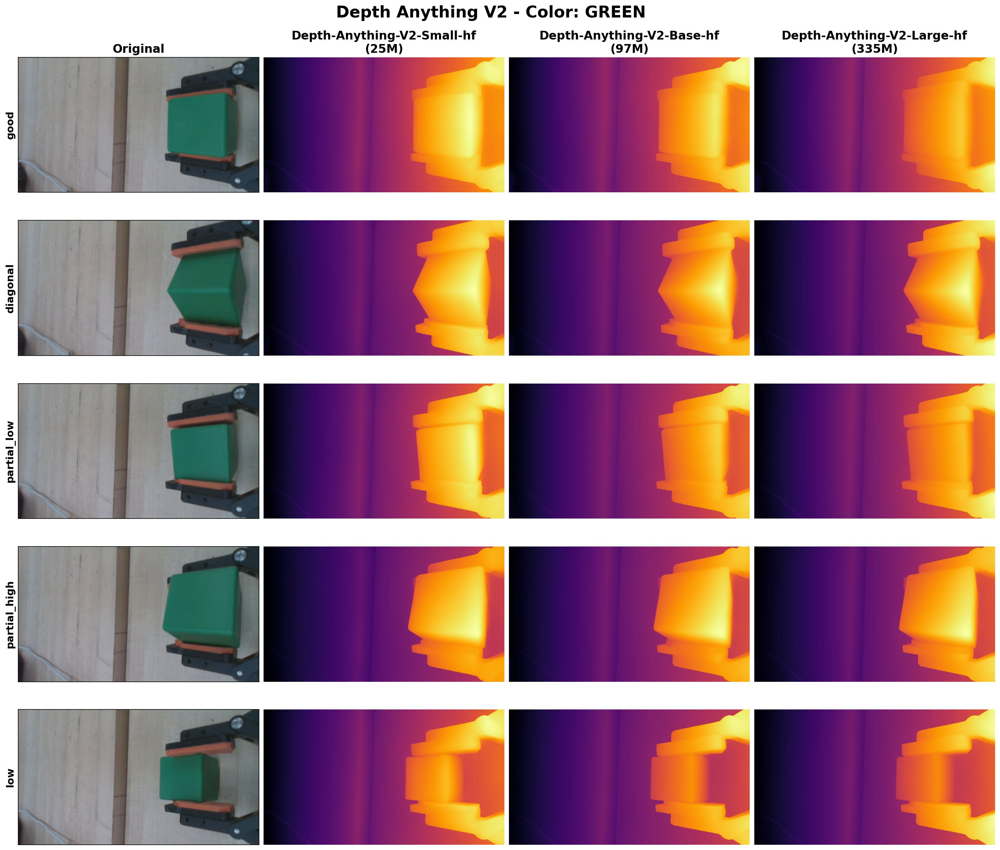
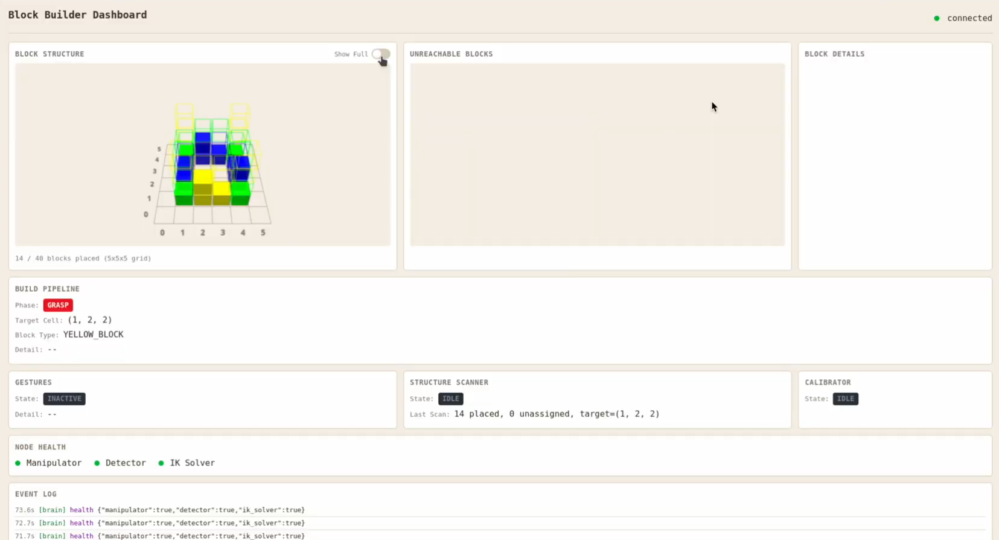

Demo Video
Hardware
Arm & Actuators
The manipulator is a 5-DOF arm driven by 6 HEBI motors, with skeletonized aluminum links (14″ shoulder-to-elbow, 12″ elbow-to-wrist) to minimize mass and inertia. The five degrees of freedom — three Cartesian axes plus wrist tilt and roll — were chosen as the minimum set needed for the task: tilt enables the magnetic separation maneuver and roll aligns the fingers with a block’s edges at any orientation.
| Joint | Motor | Peak (N·m) | Continuous (N·m) | Max Load (N·m) |
|---|---|---|---|---|
| Base | X8-9 | 20.0 | 8.0 | — |
| Shoulder | X8-9 | 20.0 | 8.0 | 7.36 |
| Elbow | X5-4 | 7.0 | 4.0 | 2.38 |
| Wrist Tilt | X5-1 | 2.5 | 1.3 | 0.1 |
| Wrist Roll | X5-1 | 2.5 | 1.3 | — |
| Gripper | X5-1 | 2.5 | 1.3 | 0.1 |
Gripper
Two-finger parallel gripper actuated by a shoulder-mounted HEBI X5-1 pulling on the fingers via a bicycle cable routed along the arm. Placing the motor proximally reduces distal inertia significantly. Finger opening (~15 mm stroke) is controlled via a radians-to-millimeters mapping. Foam-lined finger faces prevent block slippage during transport and the magnetic separation maneuver.
Cameras
The system uses two cameras. A Logitech webcam is mounted in a fixed elevated position for a top-down workspace view — used for pile detection and multi-block connection checks. An Intel RealSense D435i depth camera is mounted at the wrist above the gripper, oriented vertically — used for structure state reconstruction via point clouds and for Z calibration.


Kinematics & Control
Task Space
The task space is 5-dimensional: (x, y, z, θtilt, θroll) — three Cartesian coordinates of the gripper tip plus gripper tilt angle relative to the table and roll angle when facing down. Tilt is measured from facing away from the table (0 rad = parallel to table, −π = facing toward it). Roll is relevant only when the gripper approaches blocks from above.
Jacobian & Inverse Kinematics
The angular Jacobian rows for tilt and roll are derived analytically from joint coupling:
Inverse kinematics is solved with Newton-Raphson iteration on the 4-DOF task (x, y, z, θtilt), using a damped pseudoinverse via SVD — singular values below a threshold γ are regularized to avoid numerical instability near kinematic singularities. Joint limits are enforced at every iteration. All initial guesses start from an elbow-up configuration to prevent elbow-table collisions.
Trajectories
Arm motion is governed by a trajectory queue of ordered waypoints. The Manipulator
node interpolates between consecutive waypoints using quintic polynomial splines,
guaranteeing continuous position and velocity with zero boundary accelerations for smooth motion.
The Brain sends trajectory commands with a type field — replace, append-front,
or append-back — enabling complex multi-step maneuvers (grasp → lift → separate → grip-check →
approach → place) to be chained as a continuous trajectory without stopping.
Gravity Compensation
A static multi-body torque model cancels gravitational loading at the shoulder, elbow, and wrist-tilt joints. Per-joint moment coefficients aggregate link mass and total distal mass:
Calibration Error Maps
Systematic FK errors (mainly from imperfect gravity compensation growing with arm extension) are corrected via two calibration maps loaded as CSV at startup:
- XY error map — robot moves to a grid of positions, top camera detects a blue marker on the camera mount and stores the offset between commanded and actual tip position. A vector field of these offsets is interpolated and applied to task coordinates before each IK solve.
- Z error map — robot sweeps radially at multiple heights while the RealSense measures actual table height, capturing how gravity compensation error grows with radial extension. Applied as a Z offset per IK solve.


Motion Detectors
Three real-time safety monitors run at 100 Hz in the Manipulator node:
- Collision detection — position, velocity, and effort errors above a speed-proportional threshold trigger an immediate contact event.
- Grip failure detection — when the gripper is commanded fully closed, low motor effort signals that no block is between the fingers (an actual block resists closure, requiring higher effort).
- Jerk prevention — large sudden position discrepancies caused by brief HEBI motor connection drops are detected and the erroneous command is suppressed. After repeated events, a smooth recovery waypoint is inserted to return the arm to the correct state.
Perception System
Camera Calibration
ArUco markers at the four corners of the workspace provide an affine pixel-to-world transform for the overhead camera, refreshed every 100 seconds in case the table shifts. XY and Z calibration procedures (described in the Kinematics section) run automatically at startup and write offset CSV files that the IK Solver reloads on demand. A separate placement grid calibration re-detects the 6×6 base grid corners through the same camera pipeline, ensuring that kinematics error correction and grid registration share the same coordinate frame.
Pile Block Detection
Blocks in the disorganized pile are detected by the overhead Logitech camera using a custom pipeline:
- HSV segmentation — per-color HSV bounds filter the image to isolate each block color.
- Edge-aligned bounding box — OpenCV contours are rotated to align with the longest detected edge, an axis-aligned bounding box is computed, then rotated back — giving a tight, rotation-aware bounding rectangle.
- Rectangle splitting algorithm — large rectangles (≥2 block lengths) are subdivided into a grid of block-sized cells. Each cell is tested for occupancy and adjacency, producing a map of which block faces are magnetically connected.
Structure Reconstruction — Bayesian Voxel Occupancy Map
The 3D structure state is maintained in a sparse Bayesian voxel grid keyed by integer (ix, iy, iz) tuples. Each voxel stores log-odds occupancy, observation count, last-seen scan index, and RGB color. Every scan from the wrist RealSense runs four sequential update passes:
After integrating scans, the system queries the map layer-by-layer (one layer per block height), detects blocks in each layer using the same contour algorithm as pile detection, and matches them to target grid cells. Blocks hidden beneath visible layers are assumed correctly placed (conservative occlusion assumption). The result is the current build state used to select the next block to place.


Temporal Buffering with DBSCAN
To prevent acting on momentarily-visible or still-moving blocks, the Brain maintains a pile detection buffer over a rolling ~2-second window. DBSCAN clusters detections spatially (chosen because it requires no cluster count and designates sparse detections as outliers automatically). A block is published as stable only if its cluster position variance is under 2 cm and it has been consistently detected for the full buffer duration — preventing premature grasps.
Depth Anything V2 — Grip Quality Classification
After every grasp, the system must verify grip quality. The RealSense depth sensor cannot be used directly — the gripped block falls within its minimum supported depth range. Instead:
- An RGB image of the grip area is captured from the wrist camera.
- Depth Anything V2 Base (97M parameters) infers a relative depth map, served via a standalone FastAPI server to avoid blocking the Detector’s ROS callback pipeline.
- Three regions of interest spanning the two fingers and block face are analyzed to classify grip state into one of five classes: good / low / high / diagonal / partial.
- Any non-good result triggers a targeted recovery before the arm proceeds to the target cell.
The Base model was selected over Small (25M) and Large (335M) variants after comparing spatial resolution versus inference time across all grip states:

ROS 2 Software Architecture
The software is structured as four cooperating ROS 2 nodes communicating exclusively
via publish-subscribe topics. Every node participates in a mutual heartbeat protocol —
each publishes a boolean on its own <node>/heartbeat topic at a fixed rate and monitors
peer heartbeats to detect node failures.
The Brain uses speculative IK precomputation — while the arm is executing the current trajectory, it issues a precompute request for the expected next trajectory. A primary request (needed immediately) preempts any in-progress precompute thread, minimizing idle wait time.

Real-time web dashboard served via FastAPI with Three.js 3D structure rendering, build phase indicators, block placement statistics, event log, and per-node health indicators. Connected browsers receive live updates via Server-Sent Events (SSE).
Build Pipeline & Behaviors
The system repeats a perception–plan–act cycle, selecting and placing one block per iteration. Each iteration selects the next unfilled cell on the lowest incomplete layer closest to the structure center — building outward and upward to avoid placing blocks between or below others.
Additional behaviors: a chomp gesture signals that no pile blocks are available; a nod gesture requests human assistance for blocks the reachability analyzer has determined are outside the arm’s accessible workspace.
AI Structure Design Agent
To make the system accessible, we built a conversational AI agent using the Google Agent Development Kit (ADK) powered by Gemini 2.5 Flash. Users describe a desired structure in natural language (e.g., “build a flower” or “make a 3-layer pyramid”) and the agent iteratively generates, validates, and refines the JSON assembly file. The agent has access to seven tools: assembly constraint lookup, block inventory count, list/load saved assemblies, JSON validation (checking 8 rules including grid bounds, cantilever limits, and reachability), ASCII layer-by-layer visualization, and disk save.
The generated JSON format specifies each block by color and (x, y, z) grid position:
Shortcomings & Lessons Learned
The system is highly robust but has five primary limitations, each with a mitigation strategy:
- N×M block clusters (N,M > 2) — the arm cannot separate large fused clusters because it cannot grasp any block within them. Mitigation: unreachable clusters are detected and ignored; the arm signals for human help via the nod gesture.
- Rare structure bumps — the arm may contact the structure in unusual configurations. Mitigation: build order is outward and upward, maximizing clearance; collision detection triggers immediate stop and recovery.
- Motor connection drops — brief HEBI disconnects cause sudden positional jerks. Mitigation: jerk prevention suppresses erroneous commands and inserts smooth recovery waypoints; a “catching” behavior restarts the trajectory from the true joint state rather than forcing a catch-up jump.
- Edge-case misplaced blocks — some block positions (inside N×N connections or at workspace boundaries) cannot be grasped. Mitigation: reachability analysis marks these as inaccessible and the nod gesture requests human intervention.
- No online learning — the system cannot adapt kinematics or detection errors discovered during a run without a recalibration. Mitigation: the online calibration phase at startup produces error maps that significantly reduce systematic errors. Fully learned policies via RL were considered but deemed higher risk for the 7-week timeline.